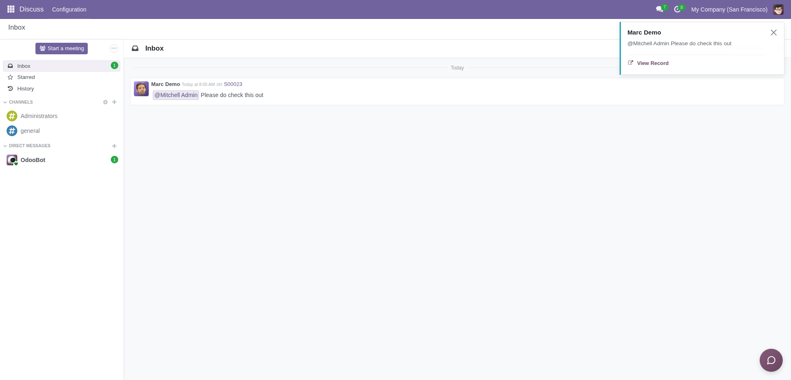

The Notification Link module enhances Odoo's native mail and notification system by adding a convenient "View Record" button. This feature ensures that users can quickly redirect to the associated document directly from their notification tray, effectively saving time and boosting navigation efficiency.

A convenient "View Record" link is seamlessly integrated into your standard Odoo notifications.
Ideal for almost every Odoo user facing the hassle of manually searching for a record mentioned in a notification popup. Notification Link significantly improves database navigation and user experience. Suitable for sales teams, accountants, inventory managers, and anyone handling documents in Odoo.
It integrates smoothly with the native mail app and notifications system, providing immediate value through faster and more direct access to system records.
Developed by ADream Innovations.
Email: adreaminnovations@gmail.com
Website: https://adreaminnovations.odoo.com/